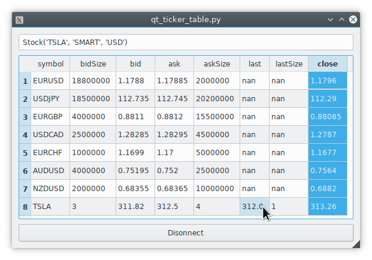

Code recipes
Collection of useful patterns, snippets and recipes.
When using the recipes in a notebook, don’t forget to use util.startLoop().
Fetching consecutive historical data
Suppose we want to get the 1 min bar data of Tesla since the very beginning up until now. The best way is to start with now and keep requesting further and further back in time until there is no more data returned.
import datetime
from ib_insync import *
ib = IB()
ib.connect('127.0.0.1', 7497, clientId=1)
contract = Stock('TSLA', 'SMART', 'USD')
dt = ''
barsList = []
while True:
bars = ib.reqHistoricalData(
contract,
endDateTime=dt,
durationStr='10 D',
barSizeSetting='1 min',
whatToShow='MIDPOINT',
useRTH=True,
formatDate=1)
if not bars:
break
barsList.append(bars)
dt = bars[0].date
print(dt)
# save to CSV file
allBars = [b for bars in reversed(barsList) for b in bars]
df = util.df(allBars)
df.to_csv(contract.symbol + '.csv', index=False)
Scanner data (blocking)
allParams = ib.reqScannerParameters()
print(allParams)
sub = ScannerSubscription(
instrument='FUT.US',
locationCode='FUT.GLOBEX',
scanCode='TOP_PERC_GAIN')
scanData = ib.reqScannerData(sub)
print(scanData)
Scanner data (streaming)
def onScanData(scanData):
print(scanData[0])
print(len(scanData))
sub = ScannerSubscription(
instrument='FUT.US',
locationCode='FUT.GLOBEX',
scanCode='TOP_PERC_GAIN')
scanData = ib.reqScannerSubscription(sub)
scanData.updateEvent += onScanData
ib.sleep(60)
ib.cancelScannerSubscription(scanData)
Option calculations
option = Option('EOE', '20171215', 490, 'P', 'FTA', multiplier=100)
calc = ib.calculateImpliedVolatility(
option, optionPrice=6.1, underPrice=525)
print(calc)
calc = ib.calculateOptionPrice(
option, volatility=0.14, underPrice=525)
print(calc)
Order book
eurusd = Forex('EURUSD')
ticker = ib.reqMktDepth(eurusd)
while ib.sleep(5):
print(
[d.price for d in ticker.domBids],
[d.price for d in ticker.domAsks])
Minimum price increments
usdjpy = Forex('USDJPY')
cd = ib.reqContractDetails(usdjpy)[0]
print(cd.marketRuleIds)
rules = [
ib.reqMarketRule(ruleId)
for ruleId in cd.marketRuleIds.split(',')]
print(rules)
News articles
newsProviders = ib.reqNewsProviders()
print(newsProviders)
codes = '+'.join(np.code for np in newsProviders)
amd = Stock('AMD', 'SMART', 'USD')
ib.qualifyContracts(amd)
headlines = ib.reqHistoricalNews(amd.conId, codes, '', '', 10)
latest = headlines[0]
print(latest)
article = ib.reqNewsArticle(latest.providerCode, latest.articleId)
print(article)
News bulletins
ib.reqNewsBulletins(True)
ib.sleep(5)
print(ib.newsBulletins())
WSH Event Calendar
A Wall Street Horizon subscription is needed to get corporate event data.
from ib_insync import *
ib = IB()
ib.connect('127.0.0.1', 7497, clientId=1)
# Get the conId of an instrument (IBM in this case):
ibm = Stock('IBM', 'SMART', 'USD')
ib.qualifyContracts(ibm)
print(ibm.conId) # is 8314
# Get the list of available filters and event types:
meta = ib.getWshMetaData()
print(meta)
# For IBM (with conId=8314) query the:
# - Earnings Dates (wshe_ed)
# - Board of Directors meetings (wshe_bod)
data = WshEventData(
filter = '''{
"country": "All",
"watchlist": ["8314"],
"limit_region": 10,
"limit": 10,
"wshe_ed": "true",
"wshe_bod": "true"
}''')
events = ib.getWshEventData(data)
print(events)
Dividends
contract = Stock('INTC', 'SMART', 'USD')
ticker = ib.reqMktData(contract, '456')
ib.sleep(2)
print(ticker.dividends)
Output:
Dividends(past12Months=1.2, next12Months=1.2, nextDate=datetime.date(2019, 2, 6), nextAmount=0.3)
Fundemental ratios
contract = Stock('IBM', 'SMART', 'USD')
ticker = ib.reqMktData(contract, '258')
ib.sleep(2)
print(ticker.fundamentalRatios)
Short-lived connections
This IB socket protocol is designed to be used for a long-lived connection, lasting a day or so. For short connections, where for example just a few orders are fired of, it is best to add one second of delay before closing the connection. This gives the connection some time to flush the data that has not been sent yet.
ib = IB()
ib.connect()
... # create and submit some orders
ib.sleep(1) # added delay
ib.disconnect()
Integration with PyQt5 or PySide2
This example
of a ticker table shows how to integrate both
realtime streaming and synchronous API requests in a single-threaded
Qt application.
The API requests in this example are connect and
ib.qualifyContracts(); The latter is used
to get the conId of a contract and use that as a unique key.
The Qt interface will not freeze when a request is ongoing and it is even possible to have multiple outstanding requests at the same time.
This example depends on PyQt5:
pip3 install -U PyQt5.
It’s also possible to use PySide2 instead; To do so uncomment the PySide2
import and util.useQt lines in the example and comment out their PyQt5
counterparts.
Integration with Tkinter
To integrate with the Tkinter event loop, take a look at this example app.
Integration with PyGame
By calling ib.sleep from within the PyGame run loop, ib_insync can periodically
run for short whiles and keep up to date:
import ib_insync as ibi
import pygame
def onTicker(ticker):
screen.fill(bg_color)
text = f'bid: {ticker.bid} ask: {ticker.ask}'
quote = font.render(text, True, fg_color)
screen.blit(quote, (40, 40))
pygame.display.flip()
pygame.init()
screen = pygame.display.set_mode((800, 600))
font = pygame.font.SysFont('arial', 48)
bg_color = (255, 255, 255)
fg_color = (0, 0, 0)
ib = ibi.IB()
ib.connect()
contract = ibi.Forex('EURUSD')
ticker = ib.reqMktData(contract)
ticker.updateEvent += onTicker
running = True
while running:
# This updates IB-insync:
ib.sleep(0.03)
# This updates PyGame:
for event in pygame.event.get():
if event.type == pygame.QUIT:
running = False
pygame.quit()